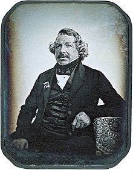
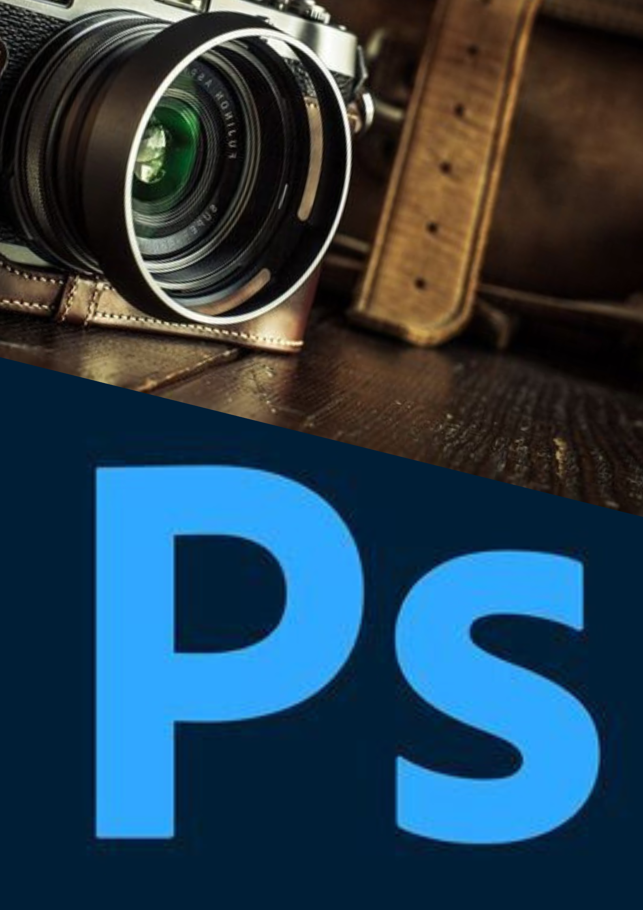
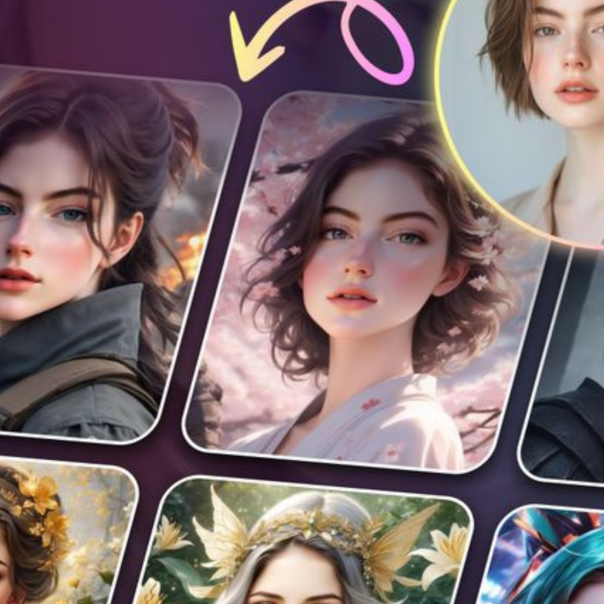
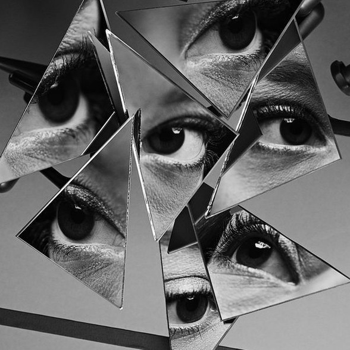

Drag & Drop Website Builder以光与创意，构筑视觉世界
从影像到设计，他们都是视觉语言的使用者
一个以光作画，一个以形传情——共同定义我们的视觉时代

摄影师：1839 年摄影术诞生。法国人路易·达盖尔发明银版摄影术。19世纪初，摄影术由科学实验发展为记录现实的技术。起初以肖像与纪实为主，成为社会与历史的重要见证者
X
设计师：源于工业革命后（19世纪末），当产品开始大量生产，设计成为连接「功能」
与「美感」的关键角色。从工业设计延伸至平面、建筑、数位界面等领域

摄影师：
1800s–1900s：纪实与肖像摄影兴起
1950s–1980s：商业摄影与广告结合
1990s–2000s：数码摄影、Photoshop 改变创作方式
2010s–至今 ：社交媒体时代，摄影变成叙事与品牌表达工具
X
设计师：
1800s–1900s：工业设计与平面设计萌芽
1950s–1980s：包豪斯理念影响现代视觉语言
1990s–2000s：数码设计、UI/UX 兴起
2010s–至今 ：设计跨界整合品牌、科技与体验

摄影师：
AI与生成影像融合创作
影像叙事转向「个人品牌化」
混合现实（AR/VR）视觉呈现
X
设计师：
数据驱动与AI辅助设计
跨媒介整合：从平面到沉浸式体验
以人为本：以用户体验为导向，通过界面与视觉引导行为与情绪

构图与视觉叙事
摄影师：透过取景、光线与线条布局主体与背景，在一帧中讲述故事或营造氛围
设计师：用网格、留白、对比与色彩组织画面，引导视线，清晰传达信息与情感
光影与色彩的运用
摄影师：以光为笔，利用自然或人造光塑造形体，用色调决定画面的情感基调
设计师：运用配色、阴影与高光建立层次，用色彩心理唤起情绪
以用户／观众为中心
摄影师：以观众为出发点，用镜头激发共鸣、好奇或情感连接
设计师：聚焦用户需求，兼顾美观与实用，解决实际问题
Drag & Drop Website Builder